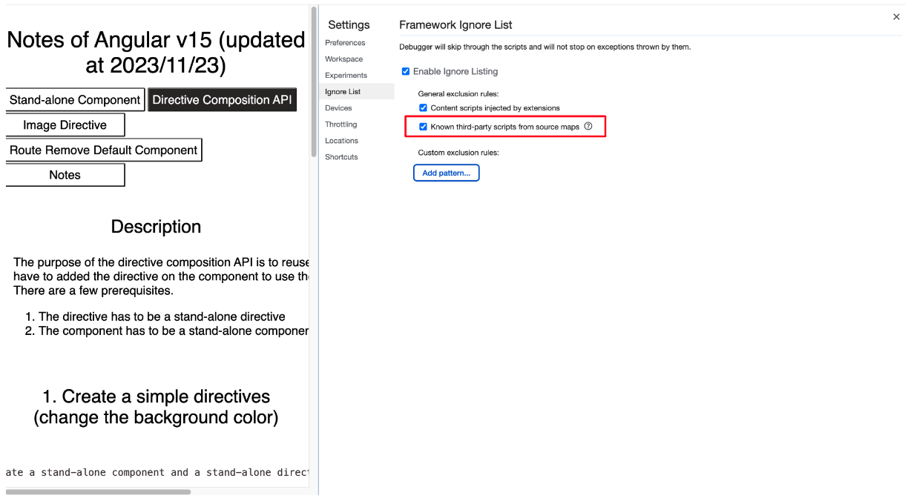
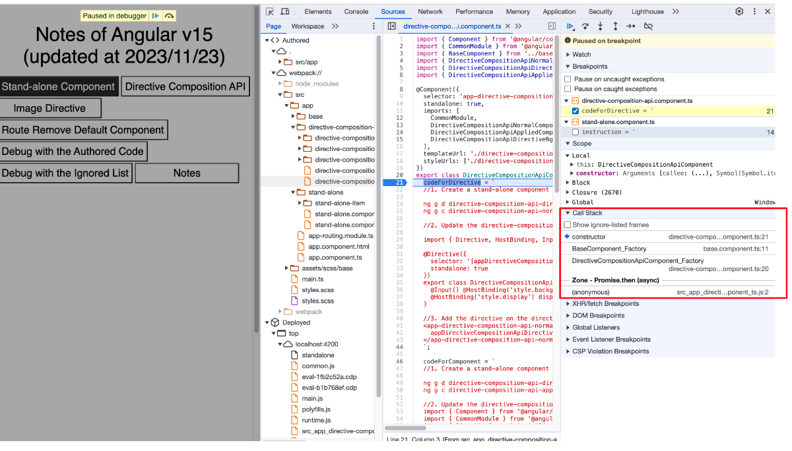
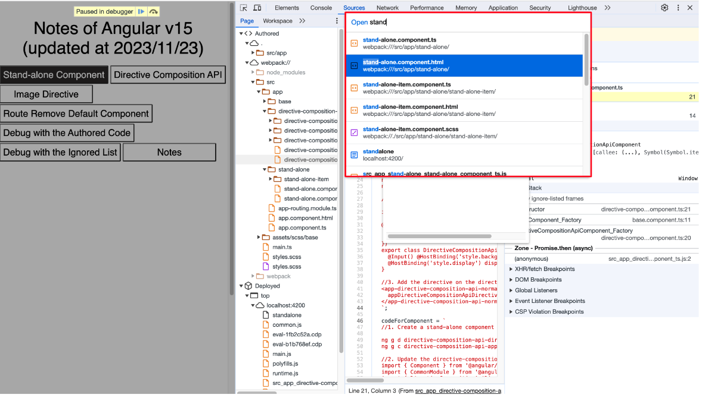

<div class="base-container">
  <div class="title">Debug with the Ignored List</div>

  <!-- title -->
  <div [ngClass]="titleClassName" (click)="toggleTitleOpen()">
    >
  </div>
  <div [ngClass]="titleSectionClassName">
    <div class="title">1. Description</div>
    <div class="description-container">
      <div>
        We are able to trace the call stack with ignoring the ignored list like <b>node_modules</b>. (Not limited to Angular v15)
      </div>
      <ol>
      </ol>
    </div>
  </div>
  
  <!-- content -->
  <div [ngClass]="contentClassName" (click)="toggleContentOpen()">
    >
  </div>
  <div [ngClass]="contentSectionClassName">
    <div class="title">2. How to navigate to the authored code</div>
    <div class="debugging-container">
      <ol>
        <li>
          <div>Enable the ignored list for the known third-party scripts from source maps (<b>DevTools > Settings > Ignored List</b>)</div>
          
        </li>
        <li>
          <div>Hide the ignored list in the source tree view (<b>DevTools > Settings > Experiments > Hide the ignored list in the source tree view</b>)</div>
          
        </li>
      </ol>
    </div>
  </div>

  <!-- demo -->
  <div [ngClass]="demoClassName" (click)="toggleDemoOpen()">
    >
  </div>
  <div [ngClass]="demoSectionClassName">
    <div class="title">3. Demo</div>
    <div class="debugging-container">
      <div class="content"></div>
      <ol>
        <li>
          <div>The callback will show without the ignored list</div>
          
        </li>
        <li>
          <div>When opening the <b>Quick Open</b> menu, it will hide the file from the ignored list</div>
          
        </li>
      </ol>
    </div>
  </div>

  <!-- reference -->
  <div [ngClass]="referenceClassName" (click)="toggleReferenceOpen()">
    >
  </div>
  <div [ngClass]="referenceSectionClassName">
    <div class="title">4. Reference</div>
    <div class="content-container">
      <ul>
        <li>
          <a href="https://developer.chrome.com/blog/devtools-modern-web-debugging/">
            Modern web debugging in Chrome DevTools
          </a>
        </li>
      </ul>
    </div>
  </div>
</div>